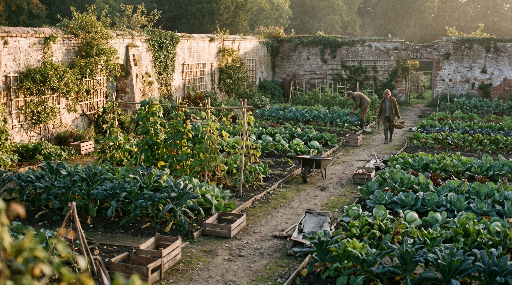

Ground Score
How we calculate your Ground Score
our expertise
Eleven years of reading other people’s hedges, orchards, and back gardens
Dr Maren Adeyo
CEO & Founder

Dr Adeyo learned to read soil beneath old hedges, where nobody had dug for a century. Fallow brings the same patience to ordinary back gardens.


The science
Discover how a single core of soil becomes a 30-season map of your garden.